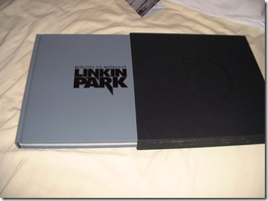

5 juillet 2007
Minutes to Midnight
Ah j'avais carrément oublié ! J'ai reçu déjà depuis un moment mon album de Linkin Park en version Collector dont je vous avait précédemment parlé.
J'ai donc l'album en format livre (Art Book) avec le CD et DVD ainsi que le t-shirt.
L'Art Book est vraiment génial, les photos ainsi que les peintures sont vraiments recherchés et j'adore le style.

J'ai pris plusieurs photos de l'Art Book, du T-Shirt ainsi que du packaging. Vous pouvez les voir sur ma gallerie photo. Quand à l'album depuis la première fois que je l'ai écouté, je l'apprécie toujours :) Le single What I've Done tiré de leur album figure dans la bande son du film Transformers !
Commentaires 2